A triple-camera (SPI, USB, MIPI) Edge AI vision system powered by UNO Q and Edge Impulse for autonomous PCB and IC quality inspection.
In modern electronics manufacturing, quality assurance (QA) is critical. Inspecting complex printed circuit boards (PCBs) and tiny integrated circuits (ICs) requires multiple viewpoints: high-resolution overhead views for general layout confirmation, flexible angled views for solder joints and side-mounted components, and low-latency close-up macro shots for inspecting individual IC markings.
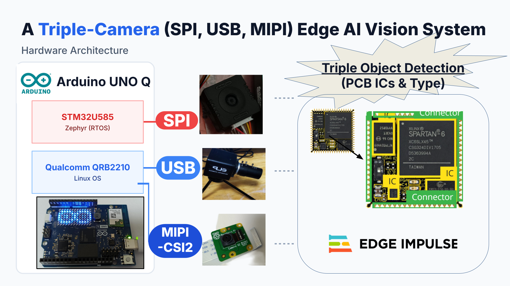
Traditional QA systems are rigid, bulky, and expensive. The Hybrid Guard introduces a hybrid, multi-camera edge AI inspection system powered entirely by the Arduino® UNO Q. By orchestrating three distinct camera interfaces (MIPI-CSI2, USB, and SPI), this system provides synchronous multi-angle vision coverage and on-device machine learning inference (Edge AI) to detect components, verify part placement, and identify defects right on the production line—all without cloud dependency.
This project's main topics are as follows:
7000 supporting one-click synchronized snapshot recording across all three cameras for dataset collection and QA logging.The following video demonstrates the integrated multi-camera system in action:
🎥 Multi-Camera PCB & IC Quality Inspection with Arduino UNO Q
The system leverages the unique dual-architecture of the Arduino® UNO Q (combining a Qualcomm QRB2210 Linux Host and an STM32U585 Zephyr RTOS MCU). If you want to check the live camera feeds and detection results via a graphical interface (GUI), you can connect your PC or mobile device to the UNO Q's wireless (Wi-Fi) network and access the integrated WebUI dashboard through your web browser.
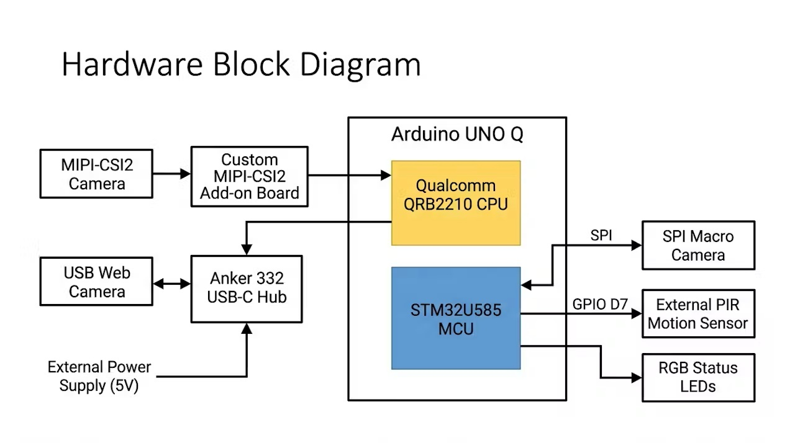
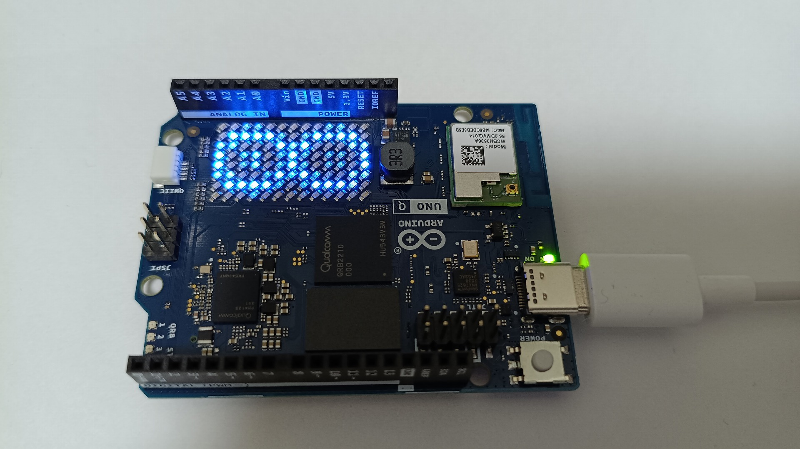
High-performance dual-core host processing unit running Qualcomm Linux and STM32 RTOS.
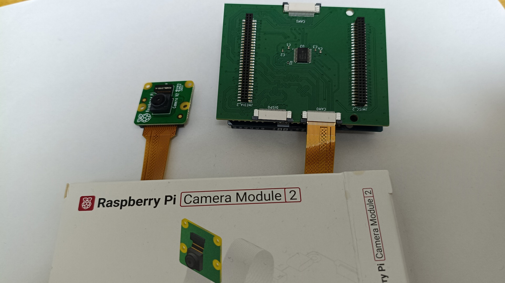
Overhead high-resolution Full HD scanning camera for board inspection.


Interface board connecting the MIPI camera to the Arduino UNO Q (Referenced from the camboard-uno-q design).
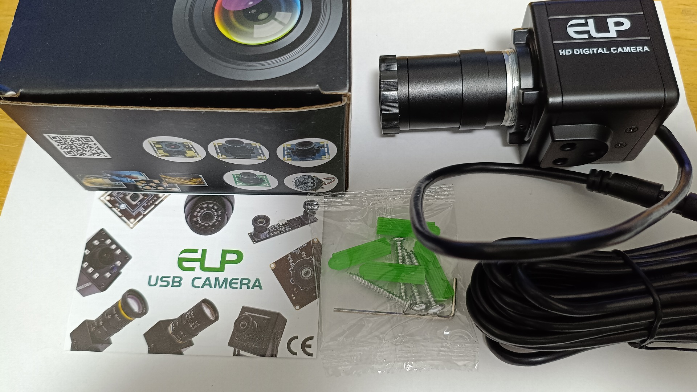
High-speed continuous inspection camera for fast sequential frame capture.
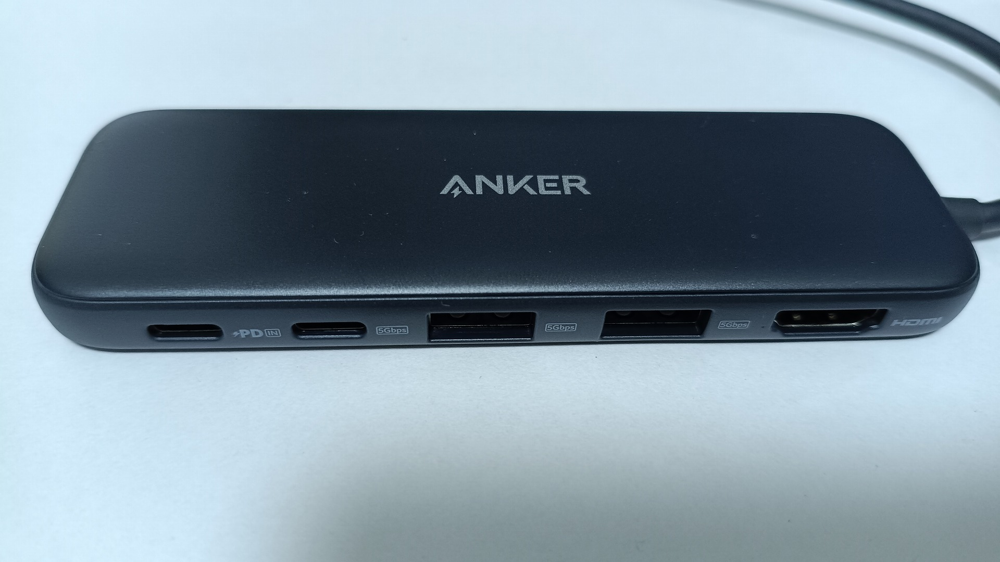
Externally powered USB-C hub providing stable power supply and connection to the USB camera.
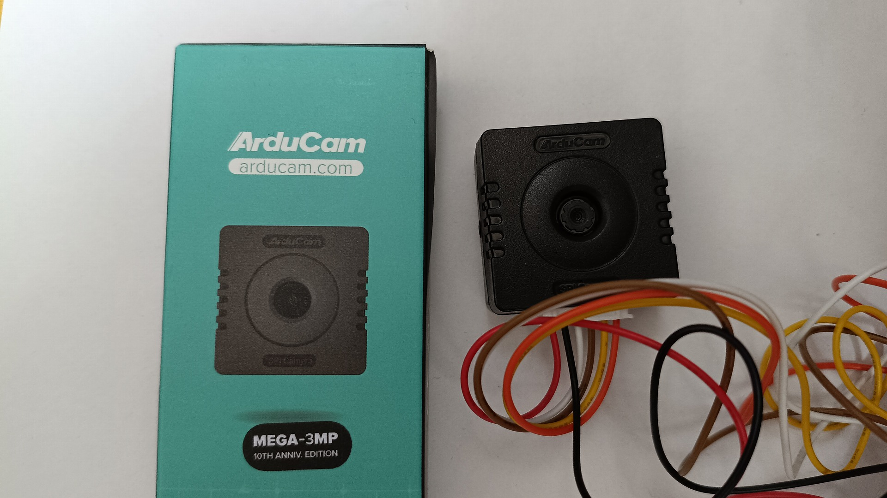
Macro inspection camera connected via JSPI/ICSP header on the MCU.
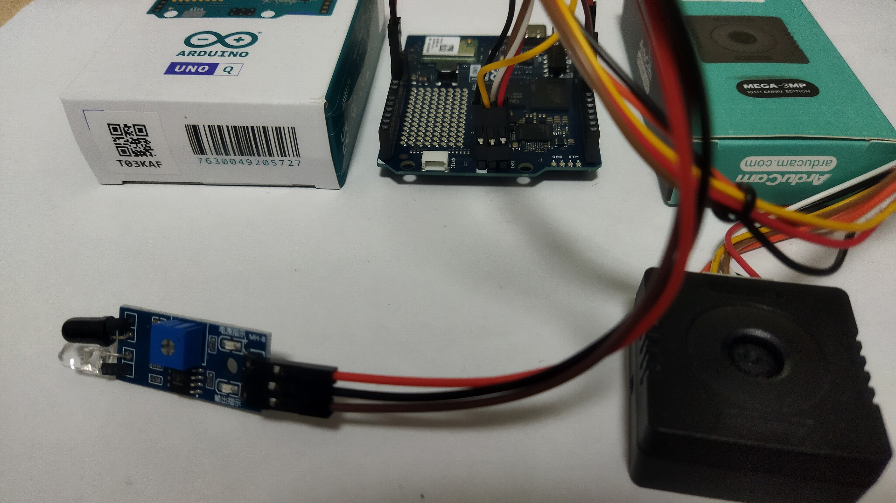
PIR sensor connected to GPIO D7 (PB2) for event-driven capture triggers.
Connect the Arducam Mega 3MP and the PIR sensor to the Arduino Uno Q as follows:
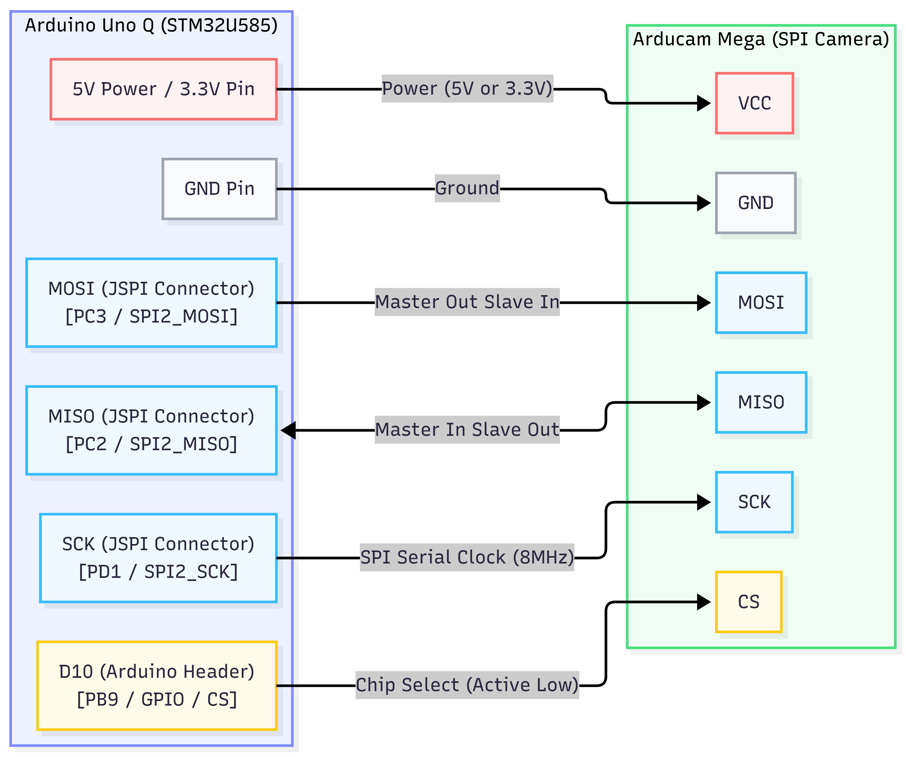
PC3 (SPI2_MOSI on ICSP)) — SPI Master Out Slave InPC2 (SPI2_MISO on ICSP)) — SPI Master In Slave OutPD1 (SPI2_SCK on ICSP)) — SPI Serial ClockPB9 (GPIO Control)) — Chip Select active-low controlPB2 (Interrupt Input)) — Active-Low trigger with internal Pull-upThe codebase is structured logically, splitting responsibilities between the high-performance Qualcomm Linux Host (MIPI and USB camera pipelines) and the low-power STM32U585 MCU (SPI camera pipeline and event-driven trigger loop). All firmware and application folders are located inside the src/ directory:
src/
├── mipi-cam/
│ ├── fps-test/ # Standalone zero-dependency Python web streamer for MIPI setups
│ ├── multi-cam/ # Orchestrator streaming MIPI, USB, and SPI cameras synchronously on port 7000
│ └── object-detect/ # Real-time MIPI object detector with interactive calibration WebUI
├── spi-cam/
│ ├── connect-test/ # Zephyr RTOS test to verify SPI communication with Arducam Mega
│ ├── object-detect/ # Real-time SPI object classification mapping targets to board LEDs
│ └── sensor-camera/ # PIR-triggered deep sleep capture & RGB status LED indicators
└── usb-cam/
├── fps-test/ # High-FPS USB camera streamer using Arduino App Lab bricks
└── object-detect/ # USB camera PCB component detector trained on PCB datasetThe SPI camera firmware runs on the STM32 microcontroller using Zephyr RTOS. It connects to the Arducam Mega 3MP camera and includes:
D10/PB9) between STM32 and the camera. The test program captures 320x240 (QVGA) photos every few seconds into the MCU SRAM frame buffer. By running the view_image.py script on a PC, developers can extract the raw image buffer from the STM32's RAM via OpenOCD/SWD debug connection and convert it to a local PNG file for verification. &arduino_spi {
status = "okay";
/* Override to use physical pin configuration for JSPI / ICSP connector */
pinctrl-0 = <&spi2_sck_pd1 &spi2_miso_pc2 &spi2_mosi_pc3>;
pinctrl-names = "default";
cs-gpios = <&arduino_header ARDUINO_HEADER_R3_D10 GPIO_ACTIVE_LOW>;
arducam_mega: arducam_mega@0 {
compatible = "arducam,mega";
reg = <0>;
spi-max-frequency = <4000000>;
status = "okay";
};
};To compile the model inside Zephyr RTOS, the Edge Impulse C++ source and parameter folders are structured inside the application directory:
src/spi-cam/object-detect/
├── CMakeLists.txt # Integrates SDK and model sources
├── prj.conf # Configures stack size and float support
├── app.overlay # Device tree pin configurations
├── src/
│ └── main.cpp # Classification loop setting status LEDs
├── edge-impulse-sdk/ # Core Edge Impulse C++ SDK library
├── model-parameters/ # Input parameters, labels, and DSP config
└── tflite-model/ # Compiled C++ TensorFlow Lite neural network modelThe project is linked to the Edge Impulse model directories and static allocation flags via CMakeLists.txt:
# Define Edge Impulse Static Allocation to avoid heap allocation
zephyr_compile_definitions(EI_CLASSIFIER_ALLOCATION_STATIC)
# Include paths for Edge Impulse model, parameters & SDK parent directory
target_include_directories(app PRIVATE
${CMAKE_CURRENT_SOURCE_DIR}
${CMAKE_CURRENT_SOURCE_DIR}/model-parameters
${CMAKE_CURRENT_SOURCE_DIR}/tflite-model
)
# Model compiled C++ sources
target_sources(app PRIVATE
tflite-model/tflite_learn_1061869_5_compiled.cpp
)
# Add Edge Impulse SDK sources and configurations
add_subdirectory(edge-impulse-sdk/cmake/zephyr)The classification loop runs inside main.cpp using the following steps:
image_buffer using the signal_t structure, binding the callback get_camera_data to unpack the RGB565 pixels into normalized float formats.run_classifier() to run neural network inference on the MCU.>= 0.5f to identify the board type (pico, xiao, nrf54l15, fpc) and maps the result to GPIO control outputs for the onboard RGB LEDs. // 1. Prepare input signal structure
signal_t signal;
signal.total_length = EI_CLASSIFIER_DSP_INPUT_FRAME_SIZE;
signal.get_data = &get_camera_data;
// 2. Execute on-device Edge Impulse model inference
ei_impulse_result_t result = { 0 };
EI_IMPULSE_ERROR ei_ret = run_classifier(&signal, &result, false);
// 3. Map high-confidence detections (>= 0.5) to RGB LEDs
uint8_t r_val = 0, g_val = 0, b_val = 0;
for (size_t ix = 0; ix < result.bounding_boxes_count; ix++) {
auto bb = result.bounding_boxes[ix];
if (bb.value >= 0.5f) {
if (strcmp(bb.label, "pico") == 0) {
b_val = 1; // Blue
} else if (strcmp(bb.label, "xiao") == 0) {
g_val = 1; // Green
} else if (strcmp(bb.label, "nrf54l15") == 0) {
r_val = 1; // Red
} else if (strcmp(bb.label, "fpc") == 0) {
r_val = 1; g_val = 1; // Yellow
}
break;
}
}
gpio_pin_set_dt(&led_red, r_val);
gpio_pin_set_dt(&led_green, g_val);
gpio_pin_set_dt(&led_blue, b_val);PB2) as a GPIO interrupt with an internal pull-up, waking the MCU from deep sleep on motion, capturing a single frame, running Edge Impulse classification, and stopping the video stream dynamically to prevent sensor overheating. // PIR Trigger and Dynamic Video Stream Lifecycle Loop
k_sem_take(&pir_sem, K_FOREVER); // Block until motion is detected
video_stream_start(camera_dev, VIDEO_BUF_TYPE_OUTPUT); // Wake camera
ret = video_dequeue(camera_dev, &captured_buf, K_FOREVER); // Capture frame
// ... (Execute Edge Impulse classification & update LEDs) ...
video_stream_stop(camera_dev, VIDEO_BUF_TYPE_OUTPUT); // Enter sleep🎥 Watch the Demo Video: Object Detection with Arducam Mega SPI Camera on Arduino UNO Q

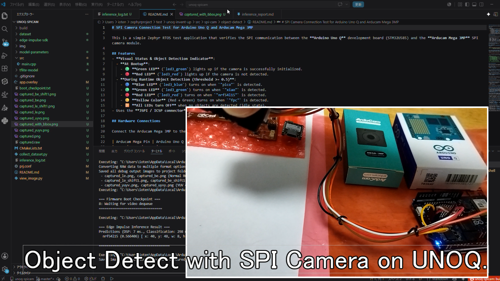
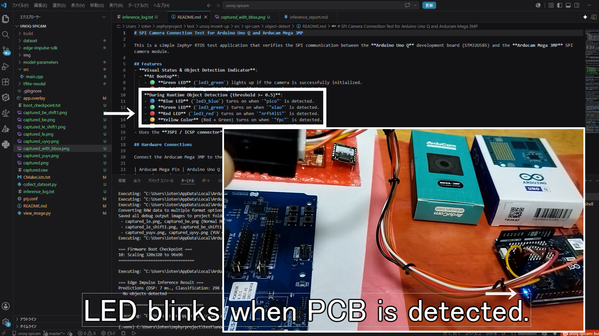
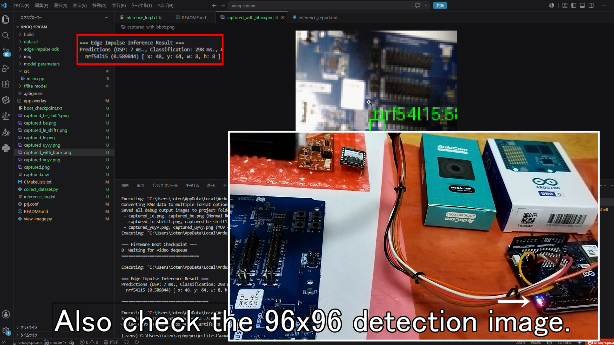
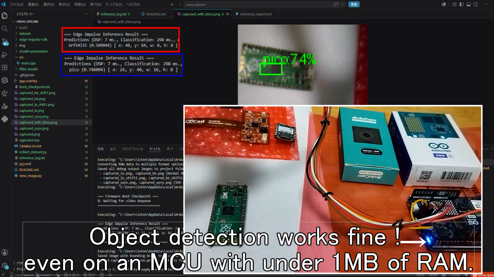
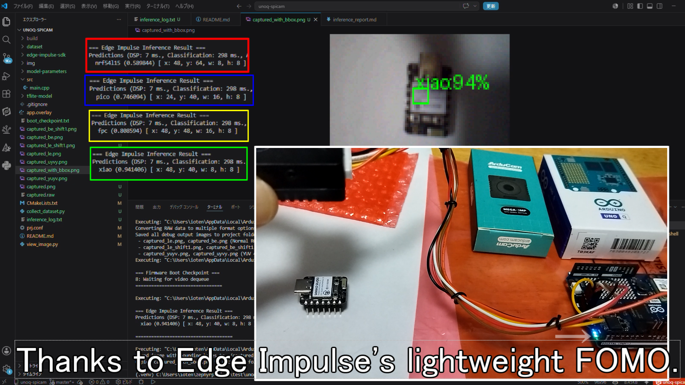
The USB camera applications run on the Linux Host side (Qualcomm QRB2210), connecting to the ELP-USBFHD08s-MFV(5-50) USB Web Camera. These applications are developed by adapting and extending the official Object Detection template from the Arduino App Lab platform:
StreamingResponse to implement non-blocking MJPEG streaming. It disables object-detection processes to maximize raw camera bandwidth and run at the hardware's highest frame rate. It features:When the user clicks "Start Save" in the WebUI, the background capture thread toggles is_saving to write each JPEG frame to a local folder with microsecond-precision timestamps:
# Capture frame using available camera read methods
if hasattr(camera, '_read_frame'):
frame = camera._read_frame()
elif hasattr(camera, 'read'):
ret, frame = camera.read()
# Save JPEG bytes to file if saving is enabled
if is_saving:
timestamp = datetime.now().strftime("%Y%m%d_%H%M%S_%f")
filename = os.path.join(save_dir, f"frame_{timestamp}.jpg")
with open(filename, "wb") as f:
f.write(jpeg_bytes)The script tracks elapsed time, computes the exact frame rate every 1.0 second, and sends the camera's resolution and FPS directly to the dashboard WebUI:
now = time.time()
frame_count += 1
elapsed = now - fps_start_time
if elapsed >= 1.0:
fps = frame_count / elapsed
height, width = frame.shape[:2]
# Send current camera FPS and resolution to the WebUI
ui.send_message("fps", message={
"fps": round(fps, 1),
"width": width,
"height": height
})
frame_count = 0
fps_start_time = now.eim) locally using the Python SDK. It continuously decodes USB frames, overlays bounding boxes on detected ICs and Connectors, and overlays the live inference FPS onto the camera feed. # Configuring the Edge Impulse model (.eim) path in app.yaml
bricks:
- arduino:video_object_detection:
variables:
EI_OBJ_DETECTION_MODEL: /home/arduino/.arduino-bricks/ei-models/camera-test-linux-aarch64-v4-impulse-#1.eim # Calculating and Sending Real-Time Inference FPS to the WebUI
elapsed = now - fps_start_time
if elapsed >= 1.0:
fps = frame_count / elapsed
ui.send_message("fps", message={"fps": round(fps, 1)})
frame_count = 0
fps_start_time = now🎥 Watch the Demo Video: Easy Object Detection with USB Camera on Arduino UNO Q

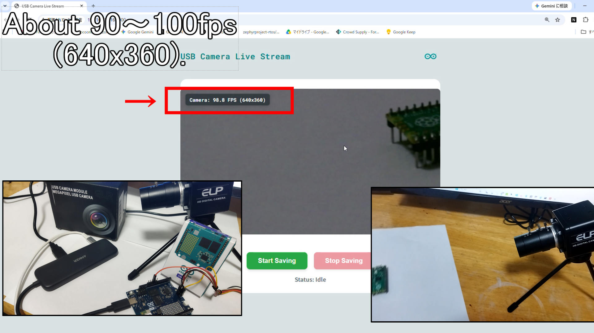
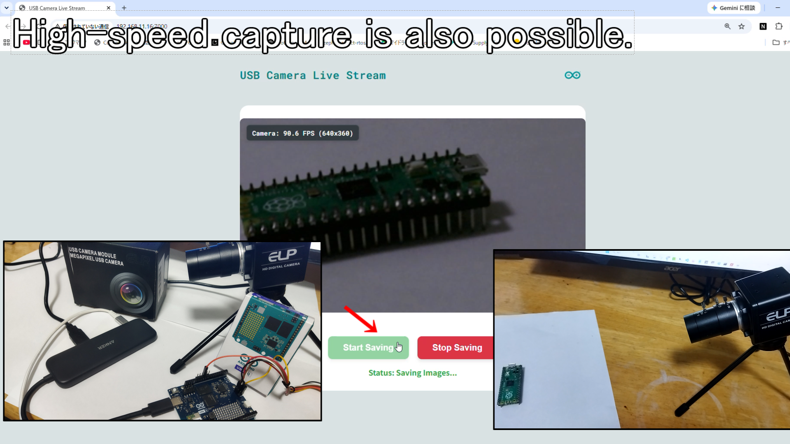
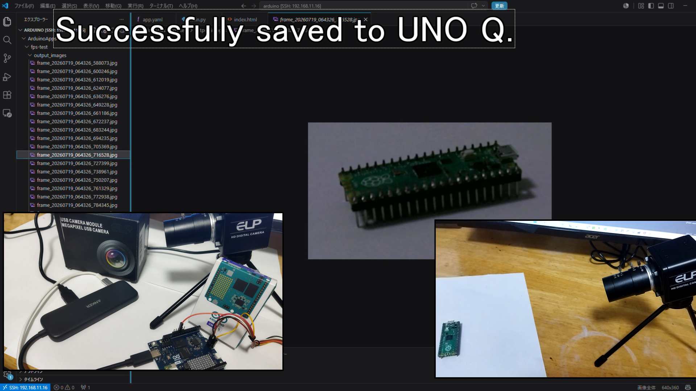
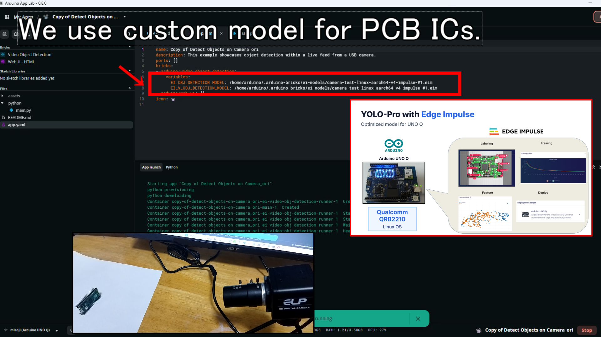
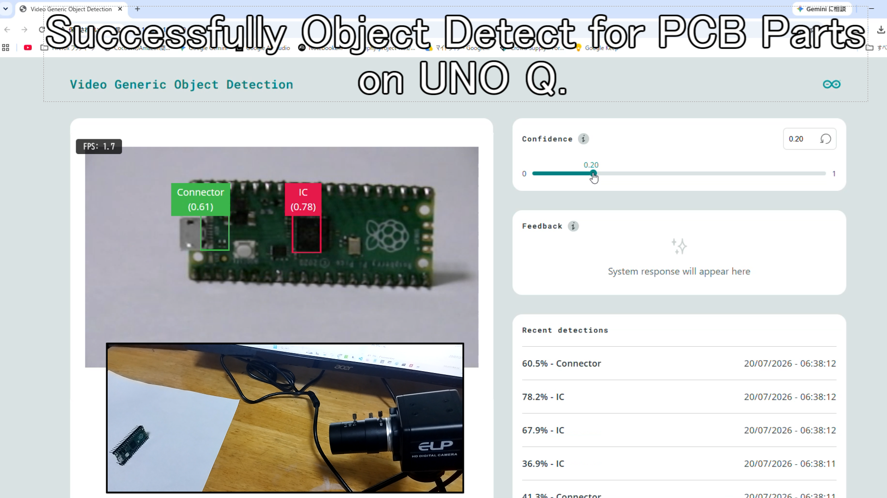
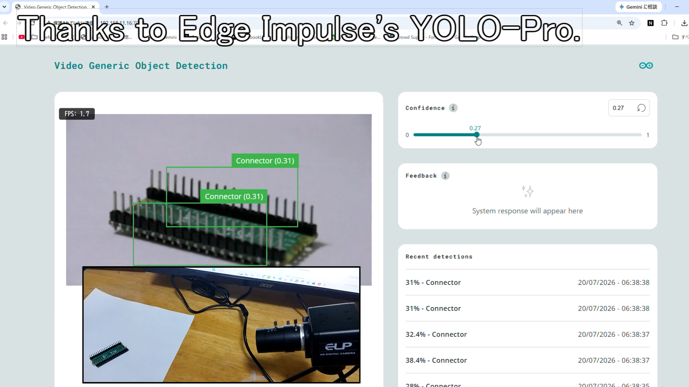
The MIPI-CSI2 camera subsystem operates on Qualcomm Linux using GStreamer (libcamerasrc) for high-performance streaming.
> [!NOTE]
> The following steps are a quick start summary. For complete step-by-step setup guides, driver configuration details, and troubleshooting notes, please refer to the dedicated MIPI Camera Setup README.
To operate the IMX219 camera module on the Arduino UNO Q and resolve device tree dependency errors, follow this kernel and device tree configuration workflow:
Compile the powerfix device tree overlay and apply it to the base dtb:
# Compile DTS overlay to DTBO
dtc -@ -I dts -O dtb -o unoq-imx219-powerfix.dtbo unoq-imx219-powerfix.dts
dtc -@ -I dts -O dtb -o qrb2210-arduino-imola-camera-rpiv2.dtb qrb2210-arduino-imola-camera-rpiv2.dts
# Merge and apply the overlay
fdtoverlay -i qrb2210-arduino-imola-camera-rpiv2.dtb unoq-imx219-powerfix.dtbo -o qrb2210-arduino-imola-camera-rpiv2-r1b.dtb
# Copy the generated DTB to boot directory
sudo mkdir -p /boot/efi/dtb/r1b/
sudo cp qrb2210-arduino-imola-camera-rpiv2-r1b.dtb /boot/efi/dtb/r1b/Update systemd-boot loader config /boot/efi/loader/loader.conf to default to stable kernel 6.16.7 to prevent bootloader cycles:
default 3e660e15577e4d88ad85a3673a183368-6.16.7-g0dd6551ae96b.confThen reboot the board: sudo reboot
Install necessary libcamera and GStreamer plugins:
sudo apt update
sudo apt install libcamera-tools gstreamer1.0-libcameraVerify offscreen camera streaming capabilities:
QT_QPA_PLATFORM=offscreen qcamhttp.server, subprocess). It launches a hardware-binned 1280x720 GStreamer pipeline to minimize debayering latency and records JPG frames locally with millisecond-precision timestamps. # Low-Latency GStreamer Pipeline launching libcamerasrc via subprocess
cmd = [
"gst-launch-1.0", "-q",
"libcamerasrc", "!",
"video/x-raw,width=1280,height=720,framerate=30/1", "!",
"videoconvert", "!",
"jpegenc", "quality=80", "idct-method=1", "!",
"fdsink", "sync=false", "async=false"
]
proc = subprocess.Popen(cmd, stdout=subprocess.PIPE, stderr=subprocess.PIPE, env=clean_env).eim Models on Linux HostTo perform object detection on the Qualcomm host CPU, the script initializes the compiled Edge Impulse executable model (.eim) file and passes packed features:
ImpulseRunner from edge_impulse_linux.runner and starts the model container.0x00RRGGBB format).runner.classify(packed_features) to calculate prediction bounding boxes. # 1. Load and initialize the compiled .eim model
runner = ImpulseRunner(EIM_FILE)
model_info = runner.init()
input_w = model_info["model_parameters"]["image_input_width"]
input_h = model_info["model_parameters"]["image_input_height"]
# 2. Pre-resize, convert to RGB, and pack pixel features into 0x00RRGGBB format
frame_resized = cv2.resize(frame, (input_w, input_h))
img_rgb = cv2.cvtColor(frame_resized, cv2.COLOR_BGR2RGB)
img_u32 = img_rgb.astype(np.uint32)
packed_features = ((img_u32[:, :, 0] << 16) | (img_u32[:, :, 1] << 8) | img_u32[:, :, 2]).astype(np.float32).reshape(-1)
# 3. Perform local model inference
res = runner.classify(packed_features)The BGR video frame is dynamically adjusted before inference based on the WebUI dashboard controls (applying CLAHE for defog/dehaze and custom RGB gain scaling):
# CLAHE Contrast Tuning (Dehaze/Defog Filter) and RGB Gain Balancing
if defog_val > 0:
lab = cv2.cvtColor(img, cv2.COLOR_BGR2LAB)
l, a, b = cv2.split(lab)
clahe = cv2.createCLAHE(clipLimit=(1.5 + float(defog_val) * 0.4), tileGridSize=(8, 8))
l = clahe.apply(l)
img = cv2.cvtColor(cv2.merge([l, a, b]), cv2.COLOR_LAB2BGR)
b, g, r = cv2.split(img.astype(np.float32))
r *= float(r_gain); g *= float(g_gain); b *= float(b_gain)
img = np.clip(cv2.merge([b, g, r]), 0, 255).astype(np.uint8)🎥 Watch the Demo Video: High-Resolution Object Detection with MIPI-CSI 2 Camera on Arduino UNO Q

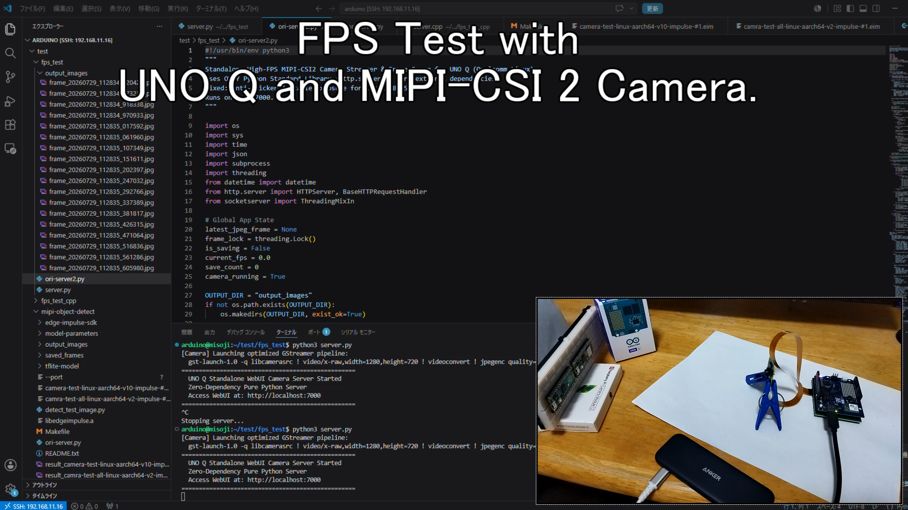
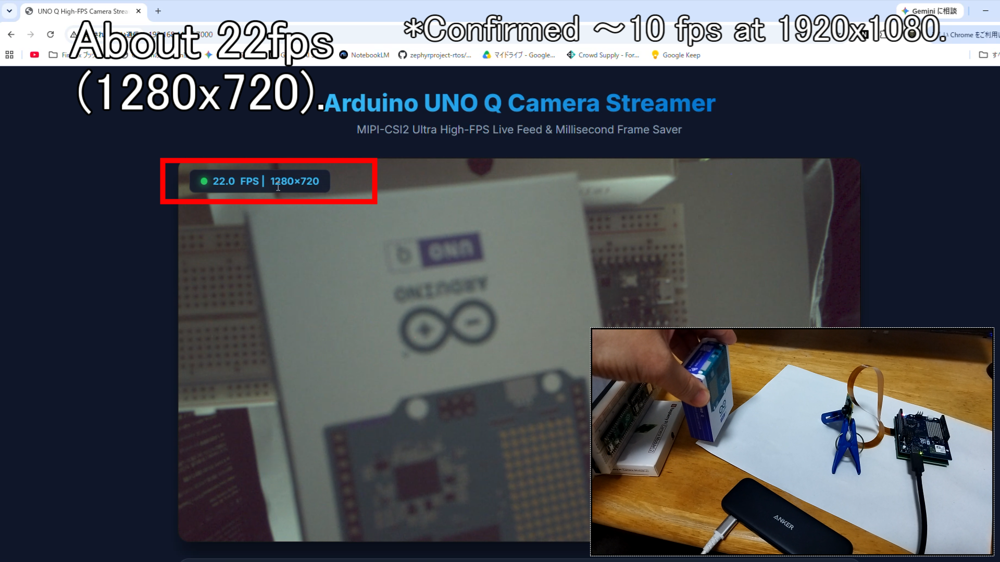
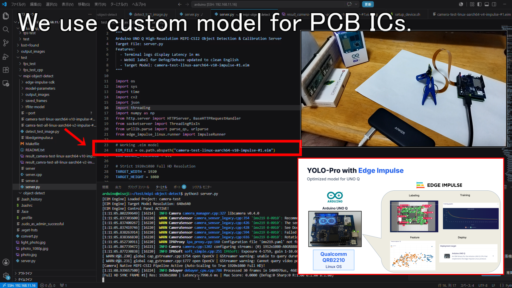
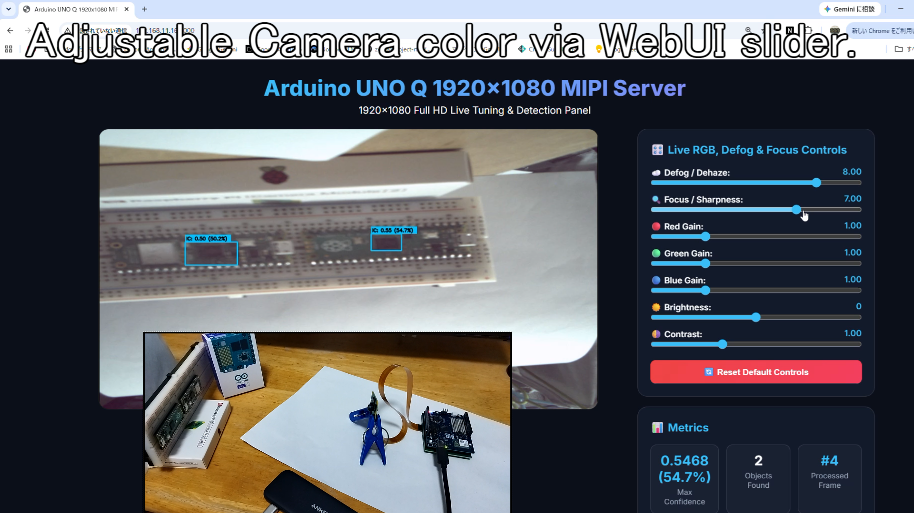
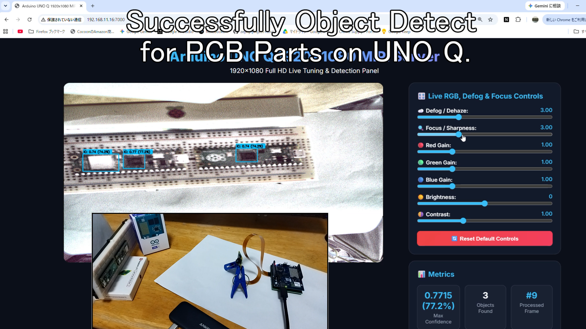
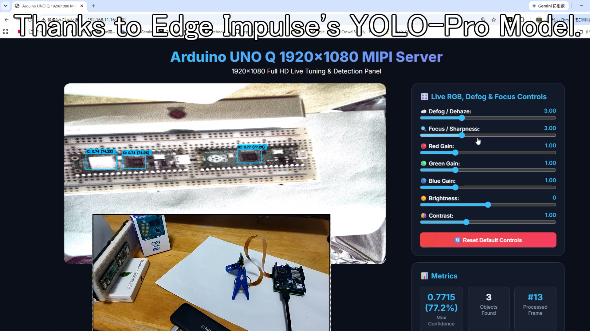
The Multi-Camera orchestrator runs multi-cam.py to capture live feeds from the MIPI-CSI2 camera, the USB Web camera, and the SPI camera simultaneously. It outputs a synchronized, responsive 3-column layout on port 7000.
# Synchronous Multi-Camera HTTP Handlers in multi-cam.py
class CameraHTTPRequestHandler(BaseHTTPRequestHandler):
def do_GET(self):
# 1. MIPI-CSI2 Live MJPEG stream endpoint
if self.path == '/video_feed/mipi':
self.send_response(200)
self.send_header('Content-Type', 'multipart/x-mixed-replace; boundary=frame')
# ... (writes frame bytes continuously from latest_mipi_frame) ...
# 2. USB Web Camera Live MJPEG stream endpoint
elif self.path == '/video_feed/usb':
self.send_response(200)
self.send_header('Content-Type', 'multipart/x-mixed-replace; boundary=frame')
# ... (writes frame bytes continuously from latest_usb_frame) ...
# 3. SPI Close-up Camera PNG snapshot endpoint (polled dynamically)
elif self.path.startswith('/video_feed/spi_png'):
with open(PNG_FILE_BOARD, "rb") as f:
self.wfile.write(f.read()) <!-- Responsive 3-Column Layout Grid displaying MIPI, USB, and SPI streams -->
<div class="triple-grid">
<div class="video-card">
<img src="/video_feed/mipi" class="video-stream" alt="MIPI Camera Stream">
</div>
<div class="video-card">
<img src="/video_feed/usb" class="video-stream" alt="USB Camera Stream">
</div>
<div class="video-card spi-card">
<img id="spiStreamImg" src="/video_feed/spi_png" class="video-stream" alt="SPI Camera Stream">
</div>
</div>🎥 Watch the Demo Video: Multi-Camera PCB & IC Quality Inspection with Arduino UNO Q
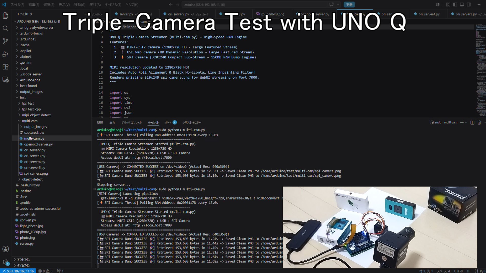
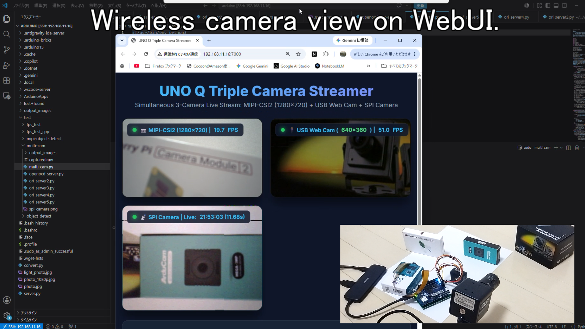
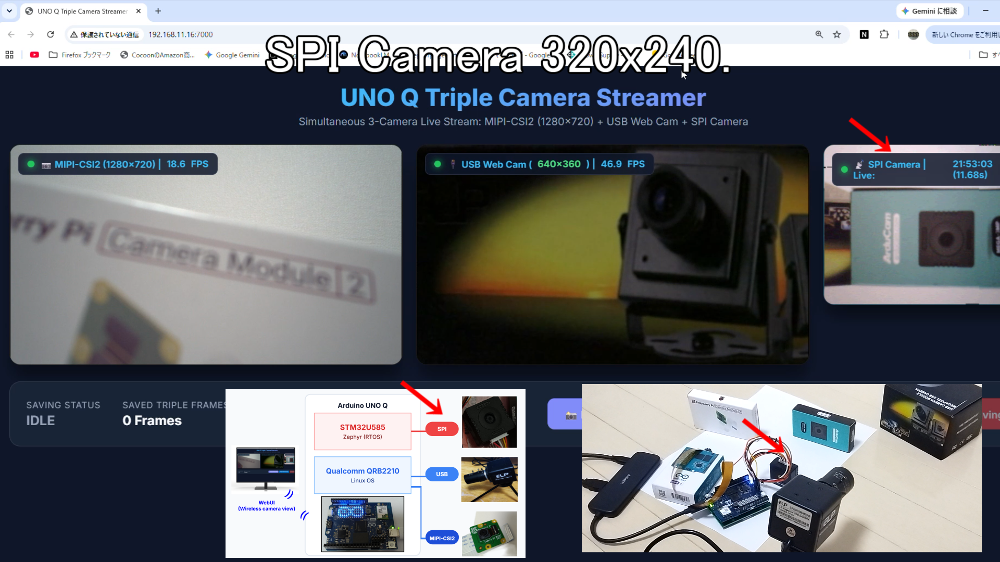
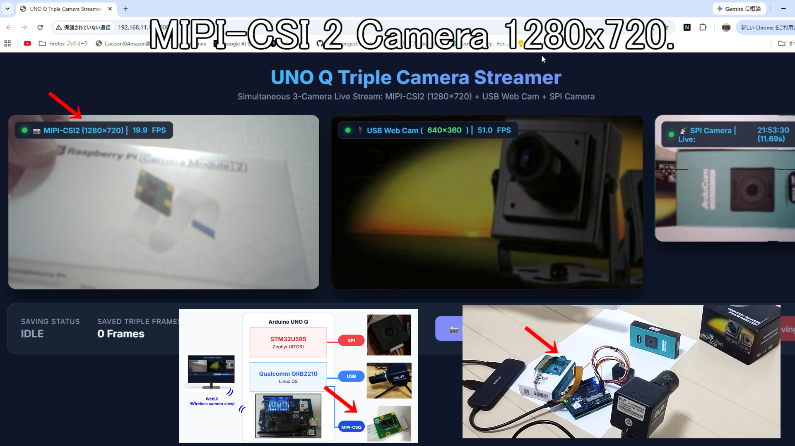
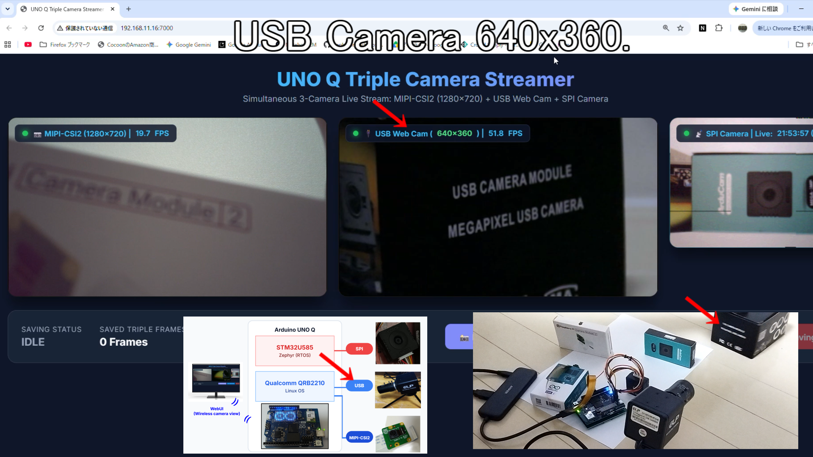
This PCB inspection project uses the Arduino® UNO Q to detect and classify components on printed circuit boards flowing down an industrial production line. All on-device object detection and classification models in this project were created, trained, and optimized using the Edge Impulse Studio platform. The system splits inspection duties across the three camera interfaces based on the specific physical requirements of the QA station.
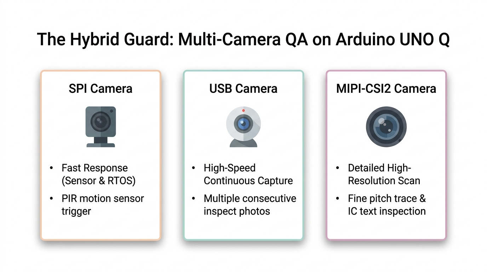
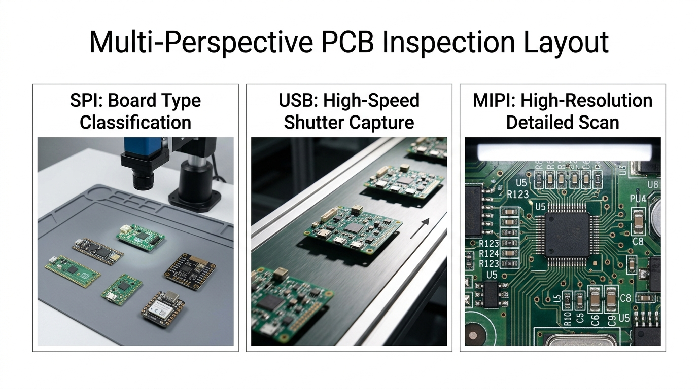
As a PCB enters the conveyor line, it triggers an external PIR sensor. The low-power STM32 MCU wakes from deep sleep, initializes the SPI camera (Arducam Mega 3MP), captures a frame, and runs the Edge Impulse on-device model instantly to classify the board in real-time into one of four target types: "pico", "xiao", "nrf54l15", or "fpc".


For line segments where PCBs pass rapidly and multiple consecutive photographs are required to verify placement in quick succession, the high-speed USB camera (ELP-USBFHD08s-MFV(5-50)) is deployed. It captures and streams frames at high frame rates, running the Edge Impulse PCB component detector to identify ICs and Connectors on the fly.


For inspection checkpoints requiring maximum detail—such as checking fine-pitch traces, checking part numbers, or reading micro-markings on individual ICs—the high-resolution MIPI-CSI2 camera (IMX219) is utilized. It performs Full HD scans to capture ultra-crisp macro images for deep analysis and precise bounding-box detection.


Building The Hybrid Guard provided key insights into the engineering trade-offs of combining dual-core systems (RTOS MCU + Linux Host) with multiple vision streams and Edge AI:
984 ms (Baseline)677 ms (31.2% speedup)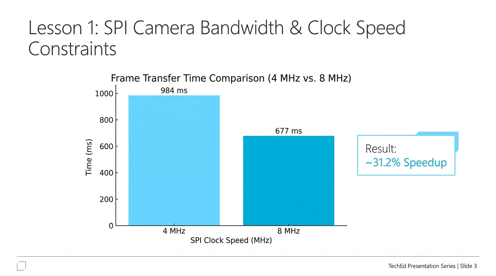
440,000 Bytes (57.29% of total 768 KB RAM / 65.40% of used RAM) to allow concurrent camera capture and inference.153,936 Bytes (20.04% of total 768 KB RAM / 22.88% of used RAM) for the Edge Impulse C++ SDK scratch space.32,768 Bytes (4.27% of total 768 KB RAM / 4.87% of used RAM).18,432 Bytes (2.40% of total 768 KB RAM / 2.74% of used RAM).672,741 Bytes / 768 KB).136,632 Bytes / 2 MB).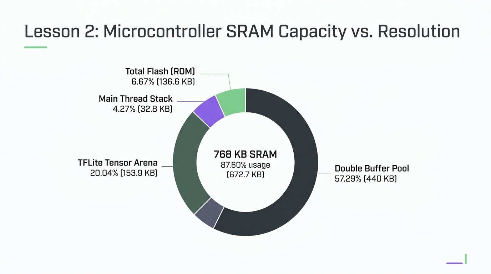
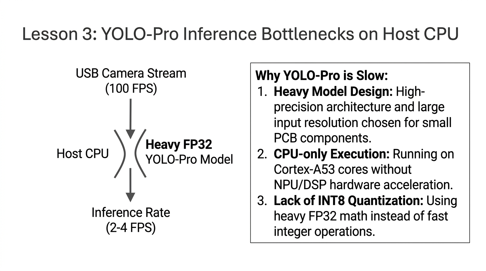
# CLAHE contrast enhancement & manual RGB gain balancing
if defog_val > 0:
lab = cv2.cvtColor(img, cv2.COLOR_BGR2LAB)
l, a, b = cv2.split(lab)
clahe = cv2.createCLAHE(clipLimit=(1.5 + float(defog_val) * 0.4), tileGridSize=(8,8))
l = clahe.apply(l)
img = cv2.cvtColor(cv2.merge([l, a, b]), cv2.COLOR_LAB2BGR)
b, g, r = cv2.split(img.astype(np.float32))
r *= float(r_gain); g *= float(g_gain); b *= float(b_gain)
img = np.clip(cv2.merge([b, g, r]), 0, 255).astype(np.uint8)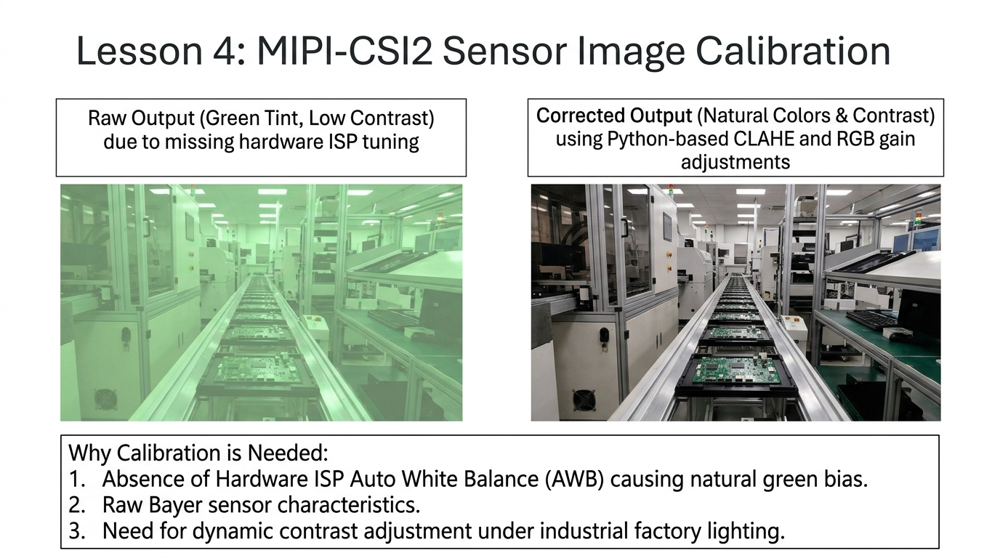
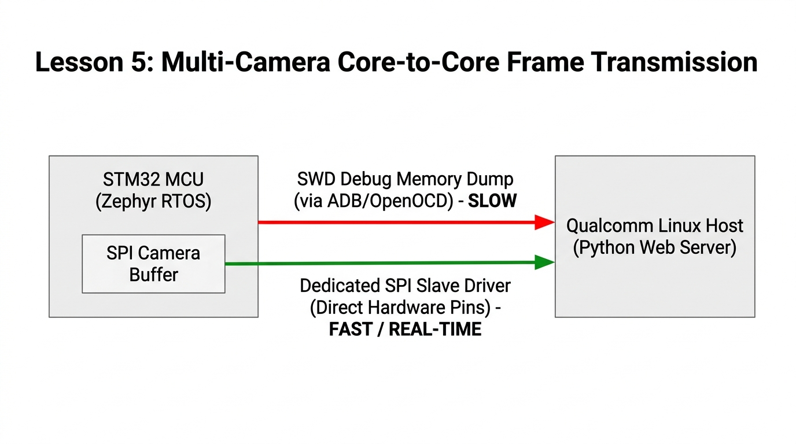
85 mA (~0.43 W)296 mA (~1.48 W) — Net Increase: 211 mA491 mA (~2.46 W) — Net Increase: 406 mA730 mA (~3.65 W) — Net Increase: 645 mA913 mA (~4.57 W) — Net Increase: 828 mA913 mA (well below the 1,262 mA sum of parts) because heavy AI model calculations are bypassed during raw streaming, validating the viability of multi-perspective edge vision under a tight 5W power limit.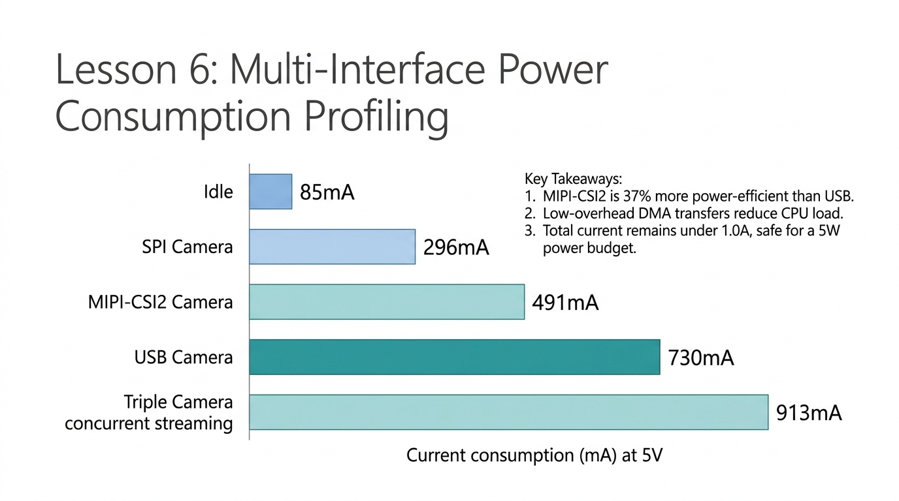
By combining the high-speed processing power of the Qualcomm QRB2210 Linux Host with the low-latency, low-power control of the STM32 Zephyr RTOS MCU, The Hybrid Guard successfully implements:
This project was built for the Invent the Future with Arduino UNO Q and App Lab contest.
This has been a great fun challenge.
Thanks to Arduino, Qualcomm and Edge Impulse for hosting this exciting program. Thank you very much for all the support provided.
This project builds upon and references the following resources:
.eim) and the generated C++ SDK folders (edge-impulse-sdk/, model-parameters/, and tflite-model/) are not hosted in this GitHub repository. Developers are expected to generate and export their own SDK variations or model binaries directly from their Edge Impulse Studio project.usb-cam/ directory is licensed under the Mozilla Public License 2.0 (MPL-2.0) by Arduino s.r.l. and retains its original headers.